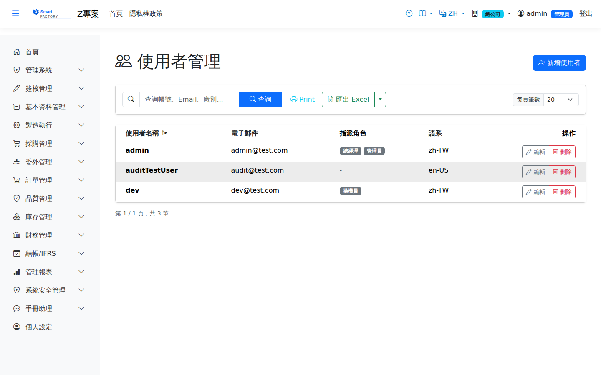

使用者管理User Management
使用者管理維護系統的User management maintains the 登入帳號sign-in accounts，包含帳號、Email、介面語系，以及這個人被指派了哪些 of the system: the user name, the e-mail address, the interface language, and which 角色roles。使用者本身不帶任何功能權限—— the person has been given. A user carries no permissions of their own: 權限一律掛在角色上permissions always sit on the role，指派角色才是給權限的動作。, so assigning a role is what actually grants access.

欄位說明Field reference
| 欄位名稱Field | 必填Required | 說明Guide |
|---|---|---|
| 帳號User name | 必填Required | 登入時輸入的名稱，全系統唯一。稽核日誌記錄的就是這個名稱。The name typed at sign-in; unique across the system. This is the name recorded in the audit log. |
| EmailE-mail | 必填Required | 同時是登入頁「Email」欄位所輸入的值。建立時系統直接標記為已確認，不寄發驗證信。Also the value typed into the "E-mail" box on the sign-in page. It is marked as confirmed on creation; no verification mail is sent. |
| 初始密碼Initial password | 必填Required | 只在Appears 新增only when creating時出現；編輯既有使用者時不顯示此欄位，也無法由此改密碼（見下方「忘記密碼怎麼辦」）。 a user; it is not shown when editing an existing one, and a password cannot be changed here (see "What to do about a forgotten password" below). |
| 語系Language | 只在Appears only when 編輯editing時出現，從下拉選擇「依廠別預設」「繁體中文」或「English」。選了語言就以個人為準；選「依廠別預設」（留空）則登入或切換廠別時採用所在廠別的預設語系。本人在畫面上切換語系後，會自動存成個人語系。; choose "Follow plant default", Traditional Chinese or English from the list. A chosen language always takes priority; "Follow plant default" (empty) uses the default language of the user's current plant when signing in or switching plants. Once the user switches language on screen, that choice is saved as their personal language. | |
| 個人時區Personal Time Zone | 只在Appears only when 編輯editing時出現。留空即. Left empty it means 跟隨廠別時區follow the plant time zone，這是多數帳號該有的狀態；只有該使用者目前所在的廠別本身沒有設定時區時，這個值才會生效。, which is what most accounts should be; the value takes effect only when the plant the person is currently in has no time zone of its own. | |
| 角色Roles | 可勾選You may tick 多個more than one。清單中每個角色後面的括號顯示「所屬組織單位 / 可用廠別」，例如「(總公司 / ADM、P1、P2)」；沒有掛組織單位的顯示「系統」，角色未限制廠別的顯示「所有廠別」。使用者登入後在「個人設定」切換目前生效的角色。. Each role in the list shows "organization unit / plants it may use" in brackets, for example "(Head Office / ADM, P1, P2)"; a role with no organization unit shows "System", and a role not restricted to particular plants shows "all plants". After signing in the user switches the role currently in effect under "Personal settings". |
操作步驟Steps
查詢使用者Searching for a user
新增使用者Adding a user
調整某人的角色Changing someone's roles
密碼規則Password rules
| 規則Rule | 說明Guide |
|---|---|
| 長度Length | 至少 8 個字元。At least 8 characters. |
| 組成Composition | 必須同時含有數字、大寫字母與小寫字母。是否強制特殊符號由系統組態決定，預設It must contain a digit, an upper-case letter and a lower-case letter. Whether a special character is compulsory is decided by the system configuration, and by default it is 不強制not required。. |
| 弱密碼阻擋Weak-password block | 與帳號或 Email 相同、以及常見弱密碼字典中的密碼會被拒絕，即使長度與組成都合格。A password that matches the user name or e-mail address, or that appears in the common weak-password dictionary, is rejected even when the length and composition are fine. |
| 帳號鎖定Account lockout | 連續After 5 次5登入失敗即鎖定 failed sign-in attempts in a row the account is locked for 30 分鐘30 minutes，新建立的帳號同樣適用。; this applies to newly created accounts too. |
刪除使用者Deleting a user
當這位使用者還有下列任一情況時，系統會擋下刪除並顯示原因：The system blocks the deletion and tells you why when any of the following is true of the user:
| 擋下的原因Reason it is blocked | 處理方式What to do |
|---|---|
| 已發起的簽核流程（進行中）An approval flow they started is still running | 等該流程簽完，或請對方（或管理員）撤回該申請單。Wait for the flow to finish, or have them (or an administrator) withdraw the request. |
| 待簽核的簽核流程An approval flow is waiting for them to sign | 先到「所有簽核記錄」把該單的簽核人重新指派給別人，再刪除。Reassign the approver of that request to somebody else under "All Approval Requests" first, then delete. |
匯出Export
查詢結果可匯出 Excel（.xlsx）、CSV 或 JSON，內容為帳號、Email、語系與角色清單，並套用目前的查詢條件與排序。The results can be exported as Excel (.xlsx), CSV or JSON, containing the user name, e-mail, language and list of roles, with the current search criteria and sort order applied.